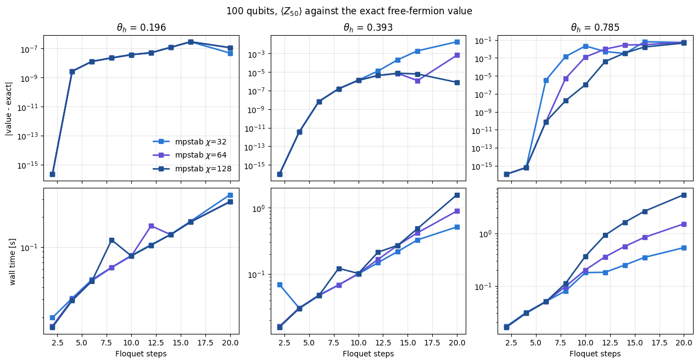
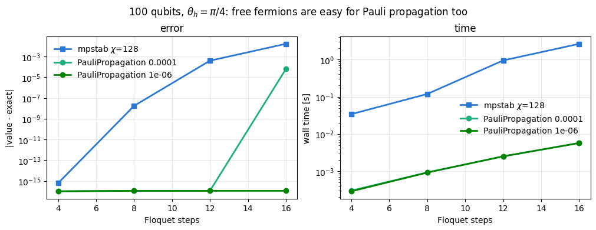

mpstab against an exact reference at 100 qubits¶
The kicked transverse-field Ising Floquet circuit
is a matchgate (free-fermion) circuit. Under the Jordan–Wigner transform every gate rotates a pair of Majorana modes, \(|0\dots0\rangle\) is a Gaussian state, and any Pauli expectation follows from the \(2n\times 2n\) Majorana covariance matrix by Wick’s theorem. That gives exact values at any width and depth in \(O(n^3)\), against which mpstab can be checked far beyond statevector sizes.
The magic knob: \(\theta_h = 0\) is Clifford, \(\pi/8\) low magic, \(\pi/4\) T-like; \(\theta_J = \pi/2\) keeps the couplings Clifford, any other value makes them magic too.
Caveat: free fermions are also easy for Pauli propagation (a Majorana bilinear stays a bilinear), so this notebook certifies accuracy at scale, not an advantage. For that see echo.ipynb.
Launch from the repository root:
uv run --with juliacall --with pandas --with jupyterlab jupyter lab examples/notebooks/benchmarks/
The PauliPropagation.jl cells download Julia and the package on first use (a few minutes); everything else needs only mpstab.
[1]:
import numpy as np
import matplotlib.pyplot as plt
import pandas as pd
from qibo import Circuit, gates
import frameworks as fw
from mpstab.evolutors.utils import gate_angle, gate_generator
COLORS = ["#2a78d6", "#6250d6", "#1f4f8f", "#1baf7a", "#008300"]
[Qibo 0.3.6|INFO|2026-11-17 09:54:27]: Using numpy backend on /CPU:0
The exact reference¶
Majoranas \(c_{2i} = Z_0\cdots Z_{i-1}X_i\) and \(c_{2i+1} = Z_0\cdots Z_{i-1}Y_i\), so \(Z_i = -i\,c_{2i}c_{2i+1}\) and \(X_iX_{i+1} = -i\,c_{2i+1}c_{2i+2}\). A gate \(e^{-i\theta G/2}\) with \(G = i s\, c_a c_b\) rotates \((c_a, c_b)\) by \(s\theta\) in the Heisenberg picture, and the covariance \(\Gamma_{ab} = \tfrac{i}{2}\langle[c_a, c_b]\rangle\) transforms as \(\Gamma \to R\,\Gamma R^T\). Then \(\langle c_{a_1}\cdots c_{a_{2k}}\rangle = \mathrm{Pf}(-i\,\Gamma_{\{a\}})\).
[2]:
def floquet_circuit(n, steps, theta_h, theta_j=np.pi / 2):
"""RZ(theta_h) on every qubit, then RXX(theta_j) on every bond, `steps` times."""
circuit = Circuit(n)
for _ in range(steps):
for q in range(n):
circuit.add(gates.RZ(q, theta=theta_h))
for start in (0, 1): # even bonds, then odd bonds (they commute)
for q in range(start, n - 1, 2):
circuit.add(gates.RXX(q, q + 1, theta=theta_j))
return circuit
def majorana_form(pauli):
"""pauli = phase * c_{a_1} ... c_{a_m}, with a_1 < ... < a_m."""
phase, word = 1 + 0j, []
for i, label in enumerate(pauli):
if label == "Z":
phase *= -1j
word += [2 * i, 2 * i + 1]
elif label in "XY":
phase *= (-1j) ** i # the Jordan-Wigner string Z_0 ... Z_{i-1}
word += list(range(2 * i)) + [2 * i if label == "X" else 2 * i + 1]
for end in range(len(word) - 1, 0, -1): # sort: -1 per swap of distinct modes
for k in range(end):
if word[k] > word[k + 1]:
word[k], word[k + 1] = word[k + 1], word[k]
phase = -phase
reduced = []
for a in word: # c^2 = 1
if reduced and reduced[-1] == a:
reduced.pop()
else:
reduced.append(a)
return phase, reduced
def pfaffian(matrix):
"""Pfaffian of an antisymmetric matrix (pivoted Parlett-Reid)."""
a = np.array(matrix, dtype=complex)
n = a.shape[0]
if n % 2:
return 0.0
result = 1.0 + 0j
for k in range(0, n - 1, 2):
pivot = k + 1 + int(np.argmax(np.abs(a[k, k + 1 :])))
if pivot != k + 1:
a[[k + 1, pivot]] = a[[pivot, k + 1]]
a[:, [k + 1, pivot]] = a[:, [pivot, k + 1]]
result = -result
if a[k, k + 1] == 0:
return 0.0
result *= a[k, k + 1]
if k + 2 < n:
tau = a[k, k + 2 :] / a[k, k + 1]
column = a[k + 2 :, k + 1].copy()
a[k + 2 :, k + 2 :] += np.outer(tau, column) - np.outer(column, tau)
return result
def covariance_after(circuit):
"""Majorana covariance of circuit|0...0>."""
n = circuit.nqubits
gamma = np.zeros((2 * n, 2 * n))
for i in range(n): # Z_i = +1 <=> <c_2i c_2i+1> = i
gamma[2 * i, 2 * i + 1], gamma[2 * i + 1, 2 * i] = -1.0, 1.0
for gate in circuit.queue:
phase, modes = majorana_form(gate_generator(gate, n))
assert len(modes) == 2, f"{gate.name} is not a free-fermion gate"
angle = np.sign(phase.imag) * gate_angle(gate)
rotation = np.array([[np.cos(angle), np.sin(angle)], [-np.sin(angle), np.cos(angle)]])
gamma[modes, :] = rotation @ gamma[modes, :]
gamma[:, modes] = gamma[:, modes] @ rotation.T
return gamma
def exact(gamma, pauli):
"""<pauli> from the covariance, by Wick's theorem."""
phase, modes = majorana_form(pauli)
if len(modes) % 2:
return 0.0 # odd parity vanishes
value = pfaffian(-1j * gamma[np.ix_(modes, modes)]) if modes else 1.0
return float((phase * value).real)
Check against a qibo statevector¶
Random Pauli strings, including long non-local ones whose Pfaffians are large, on three circuits with different magic.
[3]:
rng = np.random.default_rng(0)
n = 8
paulis = ["".join(rng.choice(list("IIIXYZ"), n)) for _ in range(60)]
worst = 0.0
for theta_h, theta_j, steps in [(0.3, np.pi / 2, 3), (np.pi / 4, 0.7, 4), (1.1, -0.4, 5)]:
circuit = floquet_circuit(n, steps, theta_h, theta_j)
state, gamma = circuit().state(), covariance_after(circuit)
for p in paulis:
if set(p) != {"I"}:
reference = fw.qibo_hamiltonian(p, n, None).expectation_from_state(state)
worst = max(worst, abs(exact(gamma, p) - float(np.real(reference))))
print(f"max |free fermions - qibo statevector| over {3 * len(paulis)} strings: {worst:.1e}")
/Users/robbiati/.cache/uv/archive-v0/7Ai9FnySbBq1nKb4NV44c/lib/python3.11/site-packages/qibo/backends/abstract.py:1216: RuntimeWarning: divide by zero encountered in matmul
return self.engine.matmul(array_1, array_2, **kwargs)
/Users/robbiati/.cache/uv/archive-v0/7Ai9FnySbBq1nKb4NV44c/lib/python3.11/site-packages/qibo/backends/abstract.py:1216: RuntimeWarning: overflow encountered in matmul
return self.engine.matmul(array_1, array_2, **kwargs)
/Users/robbiati/.cache/uv/archive-v0/7Ai9FnySbBq1nKb4NV44c/lib/python3.11/site-packages/qibo/backends/abstract.py:1216: RuntimeWarning: invalid value encountered in matmul
return self.engine.matmul(array_1, array_2, **kwargs)
/Users/robbiati/.cache/uv/archive-v0/7Ai9FnySbBq1nKb4NV44c/lib/python3.11/site-packages/qibo/backends/abstract.py:3046: RuntimeWarning: divide by zero encountered in matmul
hstate = hamiltonian @ state
/Users/robbiati/.cache/uv/archive-v0/7Ai9FnySbBq1nKb4NV44c/lib/python3.11/site-packages/qibo/backends/abstract.py:3046: RuntimeWarning: overflow encountered in matmul
hstate = hamiltonian @ state
/Users/robbiati/.cache/uv/archive-v0/7Ai9FnySbBq1nKb4NV44c/lib/python3.11/site-packages/qibo/backends/abstract.py:3046: RuntimeWarning: invalid value encountered in matmul
hstate = hamiltonian @ state
max |free fermions - qibo statevector| over 180 strings: 1.8e-15
mpstab at 100 qubits¶
\(\langle Z_{n/2}\rangle\) against the exact value, sweeping depth for three magic levels and three bond dimensions. Without truncation mpstab is exact; the error comes from the bond-dimension cap \(\chi\) once the light cone’s entanglement outgrows it.
[4]:
N = 100
STEPS = [2, 4, 6, 8, 10, 12, 14, 16, 20]
THETA_H = [np.pi / 16, np.pi / 8, np.pi / 4]
CHI = [32, 64, 128]
observable = fw.local_z(N, (N // 2,))
rows = []
for theta_h in THETA_H:
for steps in STEPS:
circuit = floquet_circuit(N, steps, theta_h)
reference = exact(covariance_after(circuit), observable)
for chi in CHI:
r = fw.run_mpstab(circuit, observable, max_bond=chi)
rows.append(dict(theta_h=theta_h, steps=steps, chi=chi, exact=reference,
error=abs(r["value"] - reference), time=r["time"]))
print(f"theta_h={theta_h:.3f} done")
sweep = pd.DataFrame(rows)
fig, axes = plt.subplots(2, len(THETA_H), figsize=(4.2 * len(THETA_H), 6.5),
sharex=True, constrained_layout=True)
for col, theta_h in enumerate(THETA_H):
for color, chi in zip(COLORS, CHI):
d = sweep[(sweep.theta_h == theta_h) & (sweep.chi == chi)]
style = dict(color=color, marker="s", linewidth=2, label=f"mpstab $\\chi$={chi}")
axes[0, col].plot(d.steps, d.error.clip(lower=1e-16), **style)
axes[1, col].plot(d.steps, d.time, **style)
axes[0, col].set(yscale="log", title=f"$\\theta_h$ = {theta_h:.3f}")
axes[1, col].set(yscale="log", xlabel="Floquet steps")
axes[0, 0].set_ylabel("|value - exact|")
axes[1, 0].set_ylabel("wall time [s]")
for ax in axes.flat:
ax.grid(alpha=0.3)
axes[0, 0].legend(frameon=False)
fig.suptitle(f"{N} qubits, $\\langle Z_{{{N // 2}}}\\rangle$ against the exact free-fermion value");
/Users/robbiati/Documents/PostDoc/mpstab-related/mpstab/.venv/lib/python3.11/site-packages/autoray/autoray.py:104: RuntimeWarning: divide by zero encountered in matmul
return func(*args, **kwargs)
/Users/robbiati/Documents/PostDoc/mpstab-related/mpstab/.venv/lib/python3.11/site-packages/autoray/autoray.py:104: RuntimeWarning: overflow encountered in matmul
return func(*args, **kwargs)
/Users/robbiati/Documents/PostDoc/mpstab-related/mpstab/.venv/lib/python3.11/site-packages/autoray/autoray.py:104: RuntimeWarning: invalid value encountered in matmul
return func(*args, **kwargs)
theta_h=0.196 done
theta_h=0.393 done
theta_h=0.785 done

At low magic the error sits around \(10^{-7}\) whatever \(\chi\) is: that is quimb’s default SVD cutoff (singular values below \(10^{-10}\) are dropped), not the bond-dimension cap. With svd_cutoff=0 the error drops to machine precision, at the price of keeping every singular value:
[5]:
circuit = floquet_circuit(N, 8, np.pi / 16)
reference = exact(covariance_after(circuit), observable)
for cutoff in (None, 0.0):
r = fw.run_mpstab(circuit, observable, max_bond=128, svd_cutoff=cutoff)
print(f"svd_cutoff={cutoff}: error {abs(r['value'] - reference):.1e}, "
f"{r['time']:.2f} s, final bond {r['bond']}")
svd_cutoff=None: error 2.2e-08, 0.07 s, final bond 12
svd_cutoff=0.0: error 6.1e-15, 0.15 s, final bond 128
/Users/robbiati/Documents/PostDoc/mpstab-related/mpstab/.venv/lib/python3.11/site-packages/autoray/autoray.py:104: RuntimeWarning: divide by zero encountered in matmul
return func(*args, **kwargs)
/Users/robbiati/Documents/PostDoc/mpstab-related/mpstab/.venv/lib/python3.11/site-packages/autoray/autoray.py:104: RuntimeWarning: overflow encountered in matmul
return func(*args, **kwargs)
/Users/robbiati/Documents/PostDoc/mpstab-related/mpstab/.venv/lib/python3.11/site-packages/autoray/autoray.py:104: RuntimeWarning: invalid value encountered in matmul
return func(*args, **kwargs)
Pauli propagation on the same target¶
Each run is a separate Julia process (abandoned after TIMEOUT seconds); the reported time excludes compilation.
[6]:
PP_STEPS, PP_THRESHOLDS, TIMEOUT = [4, 8, 12, 16], [1e-4, 1e-6], 120
theta_h = np.pi / 4
pp_rows = []
for steps in PP_STEPS:
circuit = floquet_circuit(N, steps, theta_h)
reference = exact(covariance_after(circuit), observable)
r = fw.run_mpstab(circuit, observable, max_bond=128)
pp_rows.append(dict(method="mpstab $\\chi$=128", steps=steps,
error=abs(r["value"] - reference), time=r["time"]))
for threshold in PP_THRESHOLDS:
r = fw.run_pp_isolated(circuit, [], observable, timeout=TIMEOUT,
warmup_gates=len(circuit.queue) // steps,
min_abs_coeff=threshold)
if r is not None:
pp_rows.append(dict(method=f"PauliPropagation {threshold:g}", steps=steps,
error=abs(r["value"] - reference), time=r["time"]))
comparison = pd.DataFrame(pp_rows)
fig, (ax_error, ax_time) = plt.subplots(1, 2, figsize=(10, 3.8), constrained_layout=True)
for color, (method, d) in zip(["#2a78d6", "#1baf7a", "#008300"], comparison.groupby("method", sort=False)):
style = dict(color=color, marker="s" if "mpstab" in method else "o", linewidth=2, label=method)
ax_error.plot(d.steps, d.error.clip(lower=1e-16), **style)
ax_time.plot(d.steps, d.time, **style)
ax_error.set(yscale="log", xlabel="Floquet steps", ylabel="|value - exact|", title="error")
ax_time.set(yscale="log", xlabel="Floquet steps", ylabel="wall time [s]", title="time")
for ax in (ax_error, ax_time):
ax.grid(alpha=0.3)
ax.legend(frameon=False)
fig.suptitle(f"{N} qubits, $\\theta_h=\\pi/4$: free fermions are easy for Pauli propagation too");
Updating registry at `/private/tmp/claude-501/-Users-robbiati-Documents-PostDoc-mpstab-related-mpstab/d6f12da4-60c4-418f-89df-ec70fe0219f1/scratchpad/julia_depot/registries/General.toml`
Project No packages added to or removed from `/private/tmp/claude-501/-Users-robbiati-Documents-PostDoc-mpstab-related-mpstab/d6f12da4-60c4-418f-89df-ec70fe0219f1/scratchpad/julia_env/Project.toml`
Manifest No packages added to or removed from `/private/tmp/claude-501/-Users-robbiati-Documents-PostDoc-mpstab-related-mpstab/d6f12da4-60c4-418f-89df-ec70fe0219f1/scratchpad/julia_env/Manifest.toml`
Project No packages added to or removed from `/private/tmp/claude-501/-Users-robbiati-Documents-PostDoc-mpstab-related-mpstab/d6f12da4-60c4-418f-89df-ec70fe0219f1/scratchpad/julia_env/Project.toml`
Manifest No packages added to or removed from `/private/tmp/claude-501/-Users-robbiati-Documents-PostDoc-mpstab-related-mpstab/d6f12da4-60c4-418f-89df-ec70fe0219f1/scratchpad/julia_env/Manifest.toml`
[juliapkg] Found dependencies: /private/tmp/claude-501/-Users-robbiati-Documents-PostDoc-mpstab-related-mpstab/d6f12da4-60c4-418f-89df-ec70fe0219f1/scratchpad/julia_env/pyjuliapkg/juliapkg.json
[juliapkg] Found dependencies: /Users/robbiati/.cache/uv/archive-v0/7Ai9FnySbBq1nKb4NV44c/lib/python3.11/site-packages/juliapkg/juliapkg.json
[juliapkg] Found dependencies: /Users/robbiati/.cache/uv/archive-v0/7Ai9FnySbBq1nKb4NV44c/lib/python3.11/site-packages/juliacall/juliapkg.json
[juliapkg] Locating Julia ^1.10.3
[juliapkg] Querying Julia versions from https://julialang-s3.julialang.org/bin/versions.json
[juliapkg] Using Julia 1.13.4 at /private/tmp/claude-501/-Users-robbiati-Documents-PostDoc-mpstab-related-mpstab/d6f12da4-60c4-418f-89df-ec70fe0219f1/scratchpad/julia_env/pyjuliapkg/install/bin/julia
[juliapkg] Finding libjulia and bindir:
| using Libdl
| print(abspath(Libdl.dlpath("libjulia")), '\0', Sys.BINDIR)
[juliapkg] Using shared Julia project at /private/tmp/claude-501/-Users-robbiati-Documents-PostDoc-mpstab-related-mpstab/d6f12da4-60c4-418f-89df-ec70fe0219f1/scratchpad/julia_env
[juliapkg] Updating Project.toml:
| [deps]
| OpenSSL_jll = "458c3c95-2e84-50aa-8efc-19380b2a3a95"
| PauliPropagation = "293282d5-3c99-4fb6-92d0-fd3280a19750"
| PythonCall = "6099a3de-0909-46bc-b1f4-468b9a2dfc0d"
|
| [compat]
| OpenSSL_jll = "3.0.0 - 3.6"
| PythonCall = "=0.9.37"
|
| [preferences]
[juliapkg] Installing packages:
| import Pkg
| Pkg.Registry.update()
| Pkg.add([
| Pkg.PackageSpec(name="PauliPropagation", uuid="293282d5-3c99-4fb6-92d0-fd3280a19750"),
| Pkg.PackageSpec(name="PythonCall", uuid="6099a3de-0909-46bc-b1f4-468b9a2dfc0d"),
| Pkg.PackageSpec(name="OpenSSL_jll", uuid="458c3c95-2e84-50aa-8efc-19380b2a3a95"),
| ])
| Pkg.resolve()
| Pkg.precompile()
